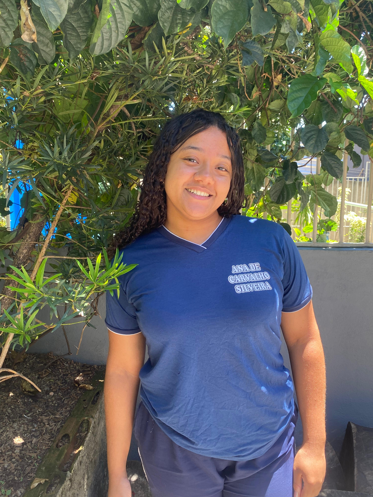

título

Descrição do portifolio: No curso,Yasmim Ribeiro aprendeu a perder o medo de apresentar, aprendeu a desenvolver códigos, Sua maior dificuldade no curso é amdc, HTML e JS, Sua maior facilidade acredita que seja no HTML e acompanhar o que o professor dita. Ela gosta de HTML, acha muito complicado mas acha muito bom. segundo ela o curso influenciou muito, pois ela não tinha noção de nenhuma das coisas, apenas o básico (ctrl v e ctrl c), e no curso aprendeu mais a fundo sobre as teclas, sobre as tags, a como desenvolver um site etc... e o curso lhe influenciou na sua vida profissional, caso ela não siga aquilo que ela quer,ela pode ter essa opção, e no momento não pretende seguir a carreira. O melhor momento do curso para ela foi aprender a desenvolver um site, mesmo tendo algumas dificuldades. e saber falar em público. Ela se orgulha de ter perdido o medo, e de nunca ter desistido do curso, pois no início não foi nada fácil, ela sentiu ansiedade, medos de não conseguir ir no ritmo que precisava ir. ela prefere entender o impacto que a tecnologia tem na sociedade,O seu conselho é que nenhum esforço fica sem retorno, seja forte e apenas continue, pois no final de tudo valerá a pena.
Descrição do portifolio